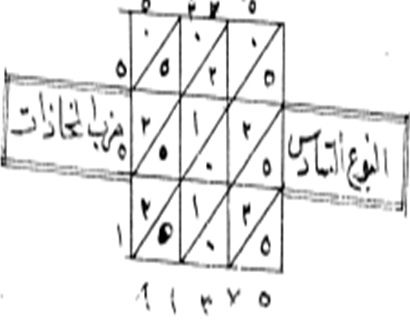

Matrakci Calculator is simple mobile application showing lattice multiplication method invented by Matracki Nasuh from 16th century.
He was renowned in the 16th century as a mathematician, historian, geographer, cartographer, topographer, musketeer, and was an outstanding knight, calligrapher and engineer of Bosniak origin. A recent study of his book, "Support of arithmetic in propositions of all magnitudes" (org. "Umdet-ul Hisab") revealed an unknown fact that Matrakci had invented a genuine multiplication method, used nearly 50 years before John Napier re-introduced it to the Western world.
Original picture of multiplication of 525x155, from Matrakci book.
More info about this multiplication method ca be found at bhrnjica.net.